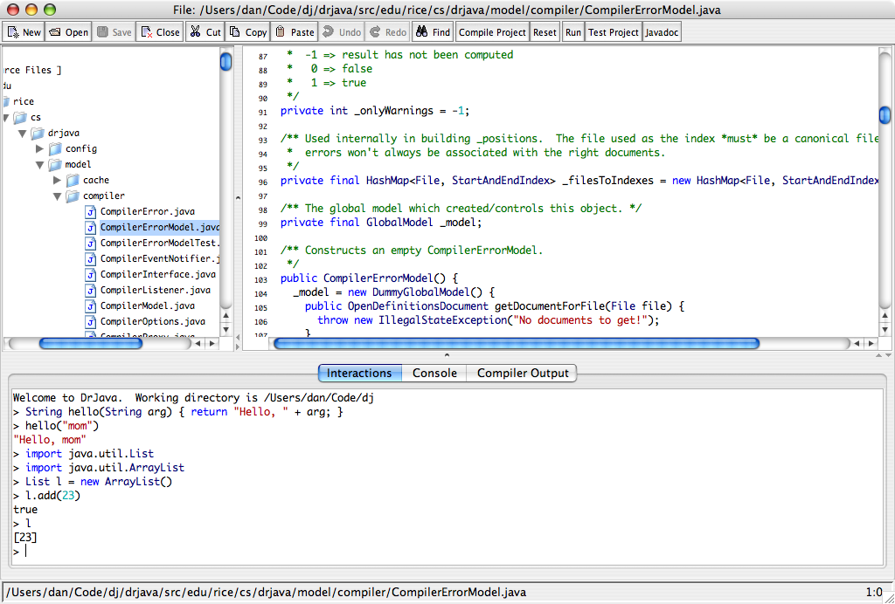
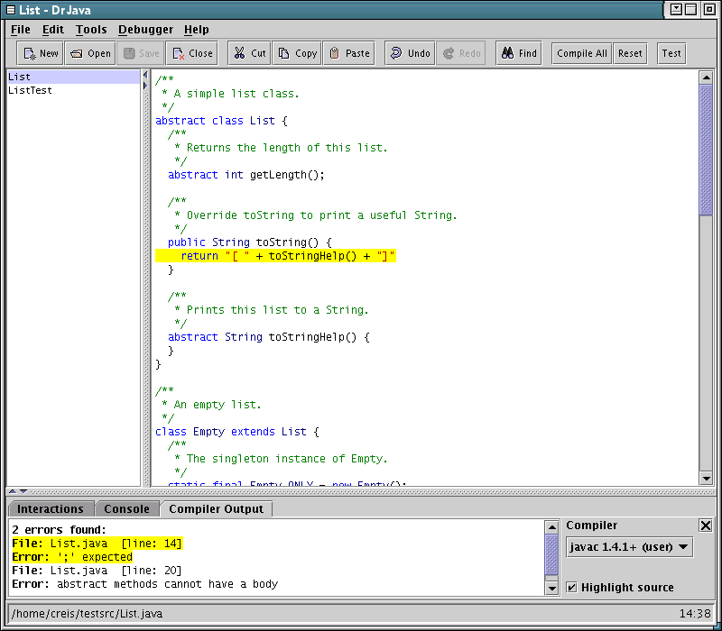
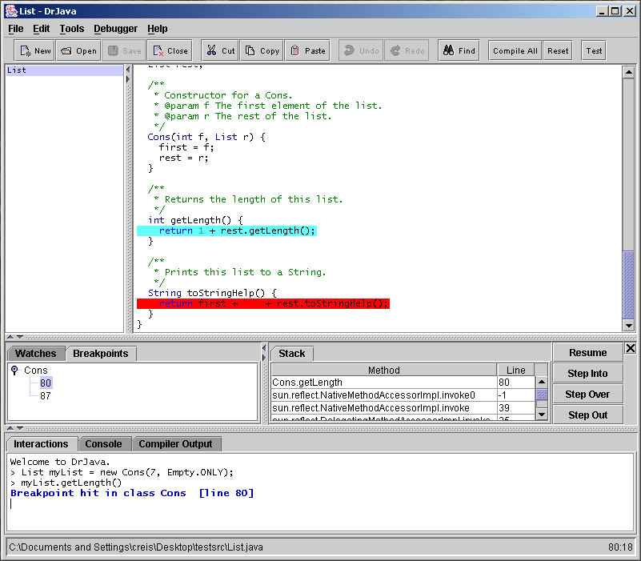
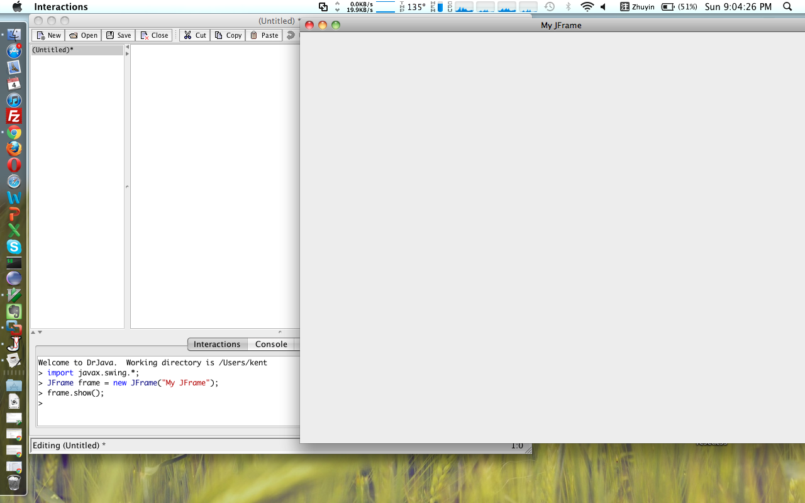

也紀念我們永遠的朋友 李士傑先生（Shih-Chieh Ilya Li）。
What is Resource Catalog ?
DrJava
DrJava 是一款開放源碼的輕量Java開發環境，這款軟體主要設計給學生讓初學的人有一個有直觀的界面並用互動的方式學習Java程式設計. Java是一款靜態編譯語言, 也就是說Java程式需要經過編譯的過程才能執行. 這對於剛剛接觸Java程式設計尤其是第一次接觸編程的人來說是一個很費時的. 有的情況下, 使用者只想測試一些簡單的Java語言特性或是更廣義來講一些編程邏輯的測試, 透過一個內建的互動功能, DrJava都能夠很迅速地做到. DrJava讓測試Java像是在寫腳本語言的程式碼. 對於想要開始編程或是瞭解Java程式語言的人, DrJava是一個學習曲線很平順的入門編輯環境.在此同時, DrJava還有一些符合軟體工程精神的功能, 讓學生們可以一次接觸到.
本文將帶領讀者瞭解關於DrJava的基礎跟基本功能
01. 安裝說明
DrJava在各大主流的作業系統上都有發佈版本. 這包含了Solaris, Linux, Windows, and Mac OS X. 不過筆者比較建議使用jar版本的DrJava.
事先確定你的電腦上有安裝JDK. 假設沒有的話, 請下載Oracle JDK 6 (from https://www.oracle.com/technetwork/java/javase/downloads/index.html). 有了JDK, 使用者才能使用DrJava內建的Debugger跟建立JavaDoc的工具.
DrJava 的程式使用兩個JVM(一個是給主程式, 另一個是給互動界面). 這兩個JVM的溝通是透過TCP/IP. 所以使用者應該確定這些驅動程式有被正確的安裝.
在完成以上步驟後, 試著執行DrJava. 在絕大部份的作業系統上, 使用者應該可以透過雙擊DrJava的圖像來啓動. DrJava也可以用指令列來啓動:
# java -jar drjava-RELEASE-DATE-rREVISION.jar [-config [CONFIG_FILE]] [filename.java...]Mac OS X上的運行畫面

Linux上的運行畫面

Windows上的運行畫面

02. 使用說明
筆者將利用以下的篇幅來說明DrJava的一些好用的功能.程式編輯
作為一個整合集成環境, DrJava理所當然地提供使用者編輯文檔的功能.
DrJava的主編輯畫面有著以下幾個功能:
- 語法高亮: 利用不同顏色將關鍵字標示出來
- 自動空格: 確立程式碼的層次清楚
- 括弧匹配: 讓開括號都能被閉合, 減少程式碼出錯的機會
- 自動聯想: 智慧完成程式, 減少打字
- 頁邊顯示: 顯示一條線讓使用者更好地控管程式碼
同時DrJava支援使用者同時編輯多個文件, 讓編程效率便更高.
專案管理
隨著程式碼變多, 文件檔案的管理變得更重要. DrJava支援專案管理使編輯, 編譯, 測試, 執行, 建立jar檔更容易互動界面
互動界面對於初學者是一個非常便利的功能. 互動見面提供強大的及時測試.以下是一個簡單的例子:
Welcome to DrJava.
> String s = "Hello World";
> s
"Hello World"
> s.length()
11
> import javax.swing.*;
> JFrame frame = new JFrame("My JFrame");
> frame.show();
>
以上的例子測試變數s是"Hello World" 然後在測試這個字串的長度. 互動界面也支援引進不同的函式庫, 如上. 例子中, javax的swing函式庫被引進, 然後一個JFrame被即時製造出來然後
互動界面讓使用者不用每次都必須寫一個main程式才可以運行程式. 每次使用者鍵入enter, DrJava就會只執行使用者的鍵入的那一行. 這項功能幫初學者或對函式庫不熟悉的程式員來說可以節省很多測試的時間
假設使用者在使用互動界面後想要重新開始, 使用者可以重設界面. 這樣就可以重新開始了.
互動界面還支援執行各種main程式:
java mainProgram arg1 arg2互動界面甚至還支援執行applet:
applet appletProgram arg1 arg2最有趣的是, 互動界面可以讀取歷史檔案(互動界面的歷史檔有.hist的副檔名)做為腳本檔案讓互動界面重現歷史檔那時的狀態
這些都是DrJava強大的互動界面所能提供的.
單元測試
除了利用互動界面來測試, DrJava支援JUnit Test 這個測試框架.
程式員可以寫JUnit Test來自動化測試. 這是軟體工程中非常重要的一環. 這讓DrJava在開發中小型專案時可以有非常系統的測試規劃.
在DrJava裡, 只要在程式檔的上部引進JUnit框架:
import junit.framework.TestCase;接下來, 程式員只要寫出各種不同的test case即可.
對於對JUnit Test有興趣的人, 可以閱讀: https://junit.sourceforge.net/doc/cookbook/cookbook.htm
除錯工具
除錯是每個程式員必經的路. DrJava提供了很多除錯工具. 除了互動界面外, 在編輯主畫面裡使用者可以設置斷點(breakpoints)所以使用者可以一段段的檢查程式狀態(包含查詢合法範圍內的函式跟變數). DrJava可以透過Debugger選單中選擇"Debug Mode"進入除錯模式(Debug mode).
Javadoc 文件產生
文件同樣是軟體工程中重要的一環. DrJava具有內建的文件產生工具支援Java世界裡面最流行的文件格式(Javadoc).
只要程式檔裡的註釋符合Javadoc文檔的格式(如下), DrJava即可自動產生出Javadoc. 這是一項非常便利的功能.
/**
* Gets the first and last name of this Student.
* @return this Student's name.
*/
public String getName()
/**
* Changes the name of this Student.
* This may involve a lengthy legal process.
* @param newName This Student's new name.
* Should include both first
* and last name.
*/
public void setName(String newName)
讀者可以參考官方的註釋風格文件: https://www.oracle.com/technetwork/java/javase/documentation/index-137868.html
結論
DrJava是一個對初學者而言非常便利的工具. DrJava內建的功能讓編程可以很便利: 編輯, 測試, 除錯, 和文件產生都被包含在內
如果讀者正在尋找一款簡單易學但功能完備的編程工具, 不妨試試看 DrJava.
參考資料
- DrJava 官方網址, https://www.drjava.org/
Address：No.128, Sec.2, Academia Rd., Institute of Information Science, Academia Sinica, Nangang District, Taipei City 11529, Taiwan (R.O.C).
Privacy Policy. Terms-of-use